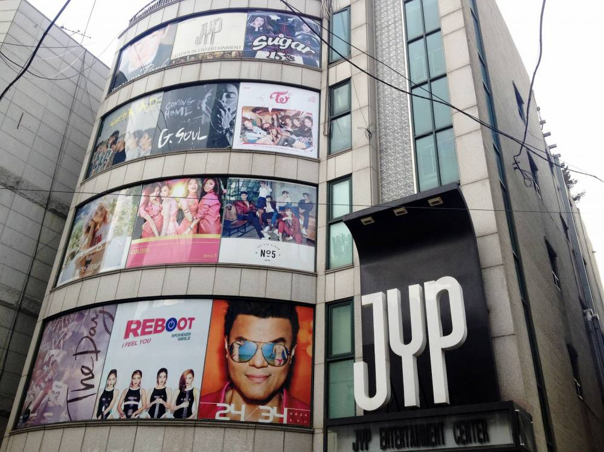

- HOME
- ABOUT
-
PROFILES
15&
2AM
2PM
BAEK AH YEON
BERNARD PARK
DAY6
GOT7
G. SOUL
J.Y. PARK
MISS A
SOMI
TWICE
WONDER GIRLS
- NEWS
-
OTHERS
JYP Entertainment to purchase and remodel a large building for its
new company headquarters
It has been reported that JYP Entertainment will be purchasing and remodeling a large building
in Seoul's Olympic Park to be used as their new company headquarters. This has gained attention as to
whether they will be using their treasury stock worth 20 Billion KRW $17.8 million (approx.) into this building.
They have decided to leave their current building that has been used since 2002. Currently, they are using five
different buildings for its operations with the main building in Cheongdam-dong but have now decided to move...
Continue reading..

JYP Entertainment will be taking legal action to protect their label artists
JYP Entertainment announced, "We will be taking strict legal action against all actions that harm
our label artists' character. We are continuing to protect our artists legally. For a more active
protection...
Continue reading..
JYP Entertainment says the Mina-BamBam photo is real but the pair are not dating
JYP Entertainment firmly denied that Mina and BamBam are dating.
The label said, "It's just a photo they took together. They're just labelmates.
We will be taking strict legal measures on matters that defame the artists' characters."
The photo had surfaced online, allegedly obtained through hacking. Some had tried to argue
that the photo...
Continue reading..
JYP Entertainment asks fans for input for GOT7's future releases
JYP Entertainment created a survey form just for GOT7 fans!
IGOT7s can give their input and help GOT7 by filling out the form, answering
questions on which songs they liked the most and disliked the most as well as the reasons why.
They can also give input on the album, on other...
Continue reading..